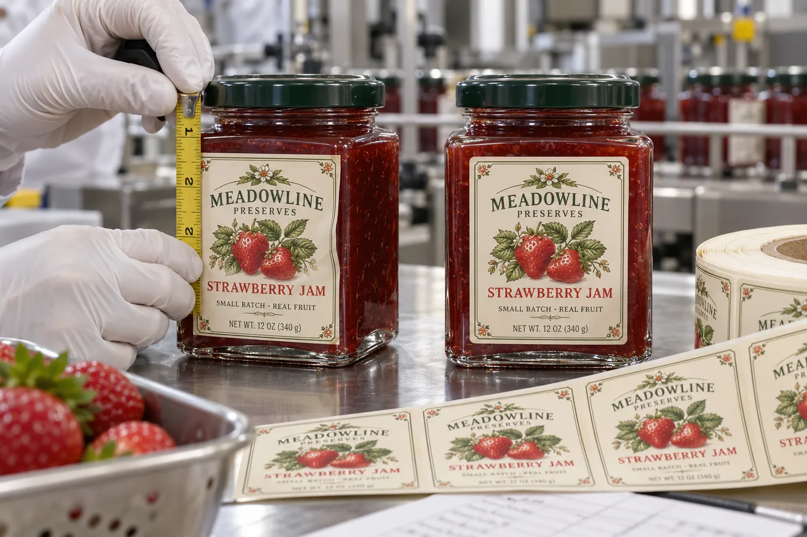

The nominal jar width is not the printable panel
I like square jam jars because they present a clear front. But if a buyer gives me only the outside width, I cannot safely make the label nearly that wide. The corner starts curving before the edge of the jar. On some glass there is also a mold seam or slight raised area. A label that bridges it may trap air or lift at the corner.
This is a geometry judgment, not a claim that a particular adhesive always fails. Our illustration is fictional. The real answer comes from several physical jars from the intended supply.
Two jam brands, two sensible layouts
Imagine a composite farm-shop jam producer ordering short runs for three flavors. A narrower front label leaves a visible glass border. Its buyers can still see the fruit, and the same label size may work across the flavors. I would spend the budget on good color consistency rather than using every last millimeter of the panel.
Now imagine a composite premium preserve brand that needs more required copy on-pack. It may use a front brand label plus a separate back information label. That costs another application step, but it keeps the visual front clear and avoids folding dense copy over a corner. If hand labeling is the bottleneck, we would compare the labor trade-off before approving two labels.
Find the repeatable flat area
Place a paper rectangle on the jar and rotate it under normal light. Mark where the flat face begins to curve, then leave a visible safety margin. Do this on multiple jars, not just the prettiest sample. Check the label height against the shoulder, base and any molded decoration. With filled jars, confirm that the chosen panel is easy for the operator or applicator to locate consistently.
| What you see | Check first | Possible change |
|---|---|---|
| One side lifts near the corner | Position and corner radius | Narrow or recenter the label |
| Both sides show bubbles | Flat-panel width and application pressure | Trial a smaller printed construction |
| Label is flat but copy feels crowded | Information hierarchy | Move secondary copy to back |
| Only some jars vary | Glass lot and molded seams | Approve across incoming lots |
Test the printed material on filled jars
Print the actual design, face and finish for the trial. Thick textured stock may change how a corner behaves; clear film can reveal trapped air more readily. Check the package after filling, labeling, boxing and normal storage. For refrigerated products, include the real moisture and temperature conditions rather than assuming a dry bench test is enough.
Our buying view
Make the glass border work for you
I would not fight a square jar to squeeze in a few more words. A deliberately narrower front often looks more premium and is easier to apply. When the information truly needs space, we should price a front/back system honestly instead of hiding a poor fit inside a stronger adhesive quote.
What to send with the RFQ
- Jars from the current production glass lot.
- Desired front and back content, including required market wording.
- Target label position and application method.
- Expected refrigeration, moisture and handling.
- Photos of approved and unacceptable edges on filled jars.
Start with the general bottle and jar size guide, then compare front/back and wrap formats if the information will not fit.
Frequently asked questions
Can a rectangular label wrap around a square jar corner?
It can be considered only after a real-jar trial. A front label that stays on the flat panel is often simpler to apply and inspect.
Why does one corner lift?
The label may cross a changing radius, raised seam or a surface that did not receive consistent pressure. Check geometry before blaming adhesive.
Do I measure the filled jar?
Use production jars and filled-condition samples, because label positioning and handling should be approved on the pack that will be sold.
Related buyer guides
Review your label specification
Send package photos, label dimensions, material details, quantity and application conditions. Include good and failed samples where possible so the discussion starts with evidence.
Continue with Jam Jar Lid Labels vs Body Labels: What Goes Where? for a focused purchase checklist.